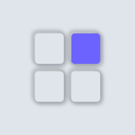

Email confirmed
You're all set
Go back to Notated: Slides and sign in with your email and password to turn on sync.
You can close this page.

Go back to Notated: Slides and sign in with your email and password to turn on sync.
You can close this page.
Try signing in to Notated: Slides. If your email is already confirmed, that's all you need.
If the app still asks you to confirm, create your account again with the same email to get a new link.